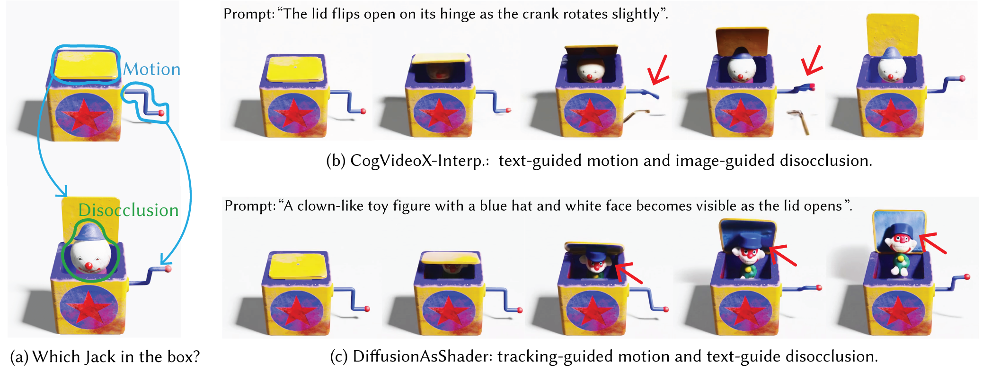
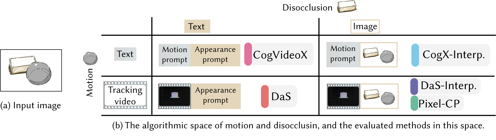

1Inria · Université Côte d'Azur2University of Edinburgh3Adobe Research4University College London

Every movement is a revelation. Like a Jack-in-the-Box slowly turning
its crank, anticipation builds around the hidden spaces inside the box
(a). Although object motion inherently creates disocclusions, motion
control (what moves and how) and disocclusion control (what appears in
the newly revealed region) remain largely unexplored as a unified design
space. Methods emphasizing disocclusion control may generate unrealistic
motion (b, video generated by CogVideoX-Interp. [Zhe25]), whereas methods
emphasizing motion control may generate unexpected disocclusion content
(c, video generated by DiffusionAsShader [GYL∗25]).
From left to right: ground-truth video, method (b), and method (c).
In this work, we present a systematic study of the unified design space of
motion and disocclusion.
01 · Benchmark
VideoReveal Benchmark
To systematically studying motion and disocclusion control in image-to-video generation, We introduce VideoReveal. A benchmark contains 32 modeled scenes and 5 captured scenes spanning rigid/deformable motion and static/dynamic disoccluded content. Each sample provides the rendered sequence, tracking guidance, disocclusion masks, and associated prompts.
Modeled and captured examples from the VideoReveal benchmark.
02 · Design Space
Evaluation Setup
Starting from an input image, we organize representative image-to-video methods
in a 2×2 design space: motion is controlled by either text or tracking, while
newly revealed content is controlled by either text or a reference image.
We evaluate five representative methods across this space:
CogVideoX,
CogVideoX-Interp.,
DiffusionAsShader,
DaS-Interp., and
Pixel-CP.

03 · Video Results
Video Results on Modeled and Captured Scenes.
Citation
@article{Qi2026VideoReveal,
title = {A Study of the Design Space of Motion and Disocclusion Control in Video Generation},
author = {Qi, Anran and Li, Changjian and Bousseau, Adrien and Mitra, Niloy J.},
journal = {Computer Graphics Forum},
year = {2026},
note = {Pacific Graphics 2026}
}
References
[GYL∗25] Gu, Zekai, Rui Yan, Jiahao Lu, Peng Li, Zhiyang Dou, Chenyang Si, Zhen Dong et al. ,
"Diffusion as shader: 3d-aware video diffusion for versatile video generation control.",
Siggraph 2025.